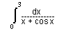
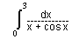
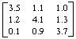

Numericka matematika
sept. '96.
asistent: Milan Drazic, smer: N, V
1. Funkciju ....f(x) = ln x cos 2x ....tabelirati na intevalu [1, 3.7] sa korakom h = 0.3 na 5 decimala, zatim inverznom interpolacijom, koristeci konacne razlike zakljucno sa IV redom, naci obe koordinate minimuma funkcije.
2. Izracunati sa tacnoscu  :

:

3. Koristeci metodu LU dekompozicije, racunajuci sa 5 decimala, naci inverznu matricu matrice:

4. Koristeci metodu proste iteracije, sa tacnoscu  ,
naci prva dva negativna resenja jednacine:...
x + tg x = 0.
,
naci prva dva negativna resenja jednacine:...
x + tg x = 0.